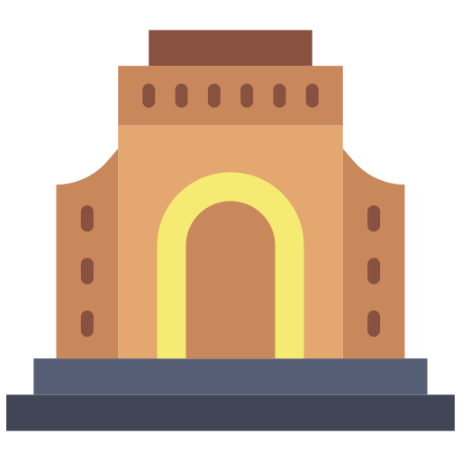

Kies jou poes



Score: 10 fokken punte
Effek: Breek soos jou ma se goedkoop wig – een klap en sy’s poespad
Score: 5 vir eerste moer, 20 as jy haar f*k opfok
Effek: Twee klappe – net soos jy jou ma se boyfriend gee
Score: 30 punk-ass punte
Effek: Jy kan haar nie breek nie, net Brannas kan – soos jou ma se attitude
Score: 50, net vir lekker
Effek: So hard slaan jy die bricks dat 'n tweede ballie uit jou moeder se verlede opduik. Twee balle, dubbel die chaos. As jy nie nou wen nie, dan's jy 'n pap snoek sonder sout.
Score: 10 punte en ‘n middle finger
Effek: Raak hom en die vlak fokof – net soos jy het van skool
Score: 1000 – ja, jou ma huil nou
Effek: 'n Skatkis van punte, maar jy sal dit steeds mors soos jou lewe
Effek: Alles ontplof soos jou ma se mikrogolf toe sy kos met tinfoil in sit
Effek: Jy’s terug – unlike jou pa
Effek: Jy vrek soos jou ma se hoop en drome
Effek: 100 punte vir jou trash-ass siel
Effek: 50 punte – dis nie goud nie, maar dis beter as jou rapport
Effek: Paddle raak so groot soos jou ma se agterent na KFC Sondag
Effek: Raak klein soos jou selfbeeld na ‘n breakup
Skuif paddle soos jy skelm jou ma se wyn bottel skuif
Gee hulle twee klappe – soos daai tjommie wat skuld betaal het
Net Brannas sorteer daai – moenie slim probeer wees nie
Finish & Bonus blokkies? Skiet en f*k hulle op, hulle’s nie real obstacles nie
Hoe vinniger jy speel, hoe minder tyd vir jou ma om vrae te vra
Moenie daai kak los nie – gryp en raak 'n fokken legend